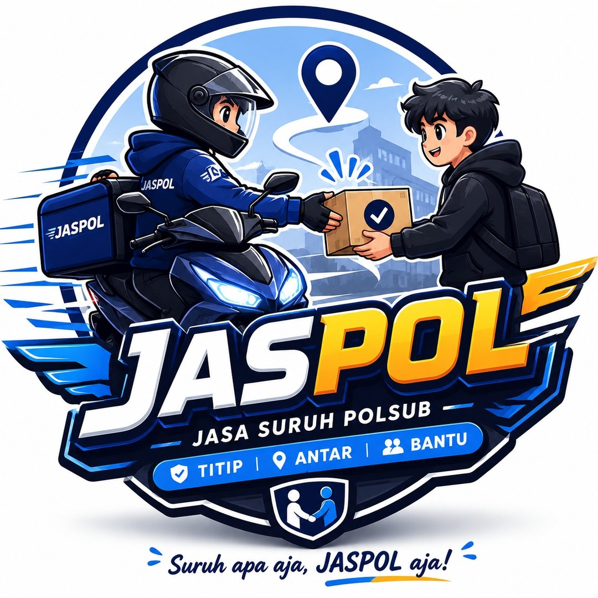

Siapa Kami
JASPOL adalah layanan jasa suruh yang berfokus pada bantuan praktis untuk memudahkan urusan Anda. Konsepnya sederhana: Anda butuh bantuan, JASPOL hadir untuk mengeksekusi dengan rapi.

Jasa Suruh Polsub
JASPOL hadir untuk membantu aktivitas Anda jadi lebih ringan, cepat, dan efisien. Dengan pelayanan yang ramah dan fleksibel, JASPOL siap menjadi partner andalan untuk kebutuhan kecil hingga mendesak.
Komunikasi jelas dan mudah dihubungi.
Menangani kebutuhan dengan cepat dan sigap.
Tentang JASPOL
JASPOL adalah layanan jasa suruh yang berfokus pada bantuan praktis untuk memudahkan urusan Anda. Konsepnya sederhana: Anda butuh bantuan, JASPOL hadir untuk mengeksekusi dengan rapi.
Cocok untuk mahasiswa, pekerja, keluarga sibuk, atau siapa pun yang ingin menghemat waktu tanpa mengurangi hasil.
Services
Fokus layanan ini disusun dari identitas visual akun dan logo: titip, antar, dan bantu.
Menitipkan barang atau keperluan dengan proses yang jelas dan praktis.
Contoh: titip barang, titip ambil, titip antar ke tujuan tertentu.Mengantarkan kebutuhan secara cepat agar Anda tetap hemat waktu dan tenaga.
Contoh: antar paket, antar barang, antar dokumen ringan.Membantu menyelesaikan urusan harian yang memerlukan tangan tambahan.
Contoh: bantu belanja, bantu ambil pesanan, bantu urusan sederhana lainnya.Cara Kerja
Sampaikan apa yang ingin dititipkan, diantar, atau dibantu.
JASPOL menyesuaikan layanan, lokasi, dan waktu pengerjaan.
Permintaan dijalankan dengan komunikasi yang jelas hingga selesai.
Testimoni
Pengalaman nyata dari pelanggan yang telah menggunakan layanan kami.
Belum ada testimoni. Jadilah yang pertama berbagi pengalaman!
Hubungi Sekarang
Cocok untuk kebutuhan mendadak, urusan kecil, atau aktivitas yang ingin dibuat lebih efisien.